Using DeltaV PredictPro
The DeltaV PredictPro application is used to create and automatically commission multivariable control strategies. After downloading a module that contains an MPCPro or MPCPlus function block, the PredictPro application can automatically test the process. The PredictPro application can be used to view the historical data collected on the process response during testing. Also, PredictPro uses the historical data collected for the module to create a step response model of the process. Based on the identified process model and the user defined control objectives and cost, the PredictPro application automatically defines the control matrix for the MPCPro or MPCPlus function blocks and saves the data to be downloaded. Using the DeltaV PredictPro's Simulation environment, you can fully test the control before placing it online. Once you download the module containing the MPCPro or MPCPlus block, you can launch the MPC Operate Pro application from a user graphic or from the PredictPro application.
Creating an MPCPro module
Before using DeltaV PredictPro in the control of a process unit, you must create a control strategy that uses the MPCPro or MPCPlus function block. Either function block can be used with large, multivariable applications when the application's size exceeds the capability of the MPC block. In addition, these blocks can be used for applications that require process optimization in addition to constraint and process input limits handling. Generally, you can use these function blocks to meet your operation objective whether that is maximizing the throughput of a unit, minimizing operation cost, or maximizing or minimizing one or more process outputs within the process operating constraints.
The DeltaV Control Studio application is used to configure the inputs and outputs of the MPCPro or MPCPlus function blocks to satisfy your particular control application. Three types of inputs to the function block can be defined using the block's Properties page:
- Control (CNTRL) - Process output measurement that is to be maintained at a specific setpoint value or within the specified range through the control action of the function block.
- Disturbance (DSTRB) - Process input measurement that impacts one or more of the Control or Constraint variables.
- Constraint (CNSTR) - Process output measurement that is to be maintained within constraint limits through the control action of the function block.
The Manipulated (MNPLT) parameters are outputs of the function block and are used to adjust process inputs such as inlet flow setpoint or feed valve. These process inputs are set using either the Analog Output (AO) function block or another control block such as the PID function block. The setpoint of these blocks is adjusted to achieve the specified control objective. The default standard control objective allows maintenance of the MPCPro Control parameters at target and the Constraint parameters within their associated limits. The number of controlled parameters must be less than or equal to the number of manipulated parameters.
For information on how to configure an MPCPro or MPCPlus function block and for examples of how these block can be used to address different application requirements, refer to the MPCPro and MPCPlus function block topics.
Commissioning an MPCPro or MPCPlus block
After downloading a module containing an MPCPro function block to a DeltaV controller or Application Station or an MPCPlus block to an Application station, verify that the transmitters and valves that provide the inputs and use the outputs of the block are working correctly. Also, make sure the Continuous Historian is enabled, the area containing the module has been assigned to the Continuous Historian, and the Continuous Historian has been downloaded. Once you have verified all of the block's I/O, you can use the PredictPro application to commission the control. To open the PredictPro application, right-click the MPCPro or MPCPlus function block in the DeltaV Explorer, and then select . You can also open the PredictPro application from Control Studio by selecting the block and selecting from the context menu. Be sure that the module containing the function block is running in the Application Station. The following interface appears when the application opens. The labels on this image call out the different areas on the interface. In the following image the PredictPro application was opened from an MPCPro block. Note that some areas on the application look slightly different when it is opened from an MPCPlus block.
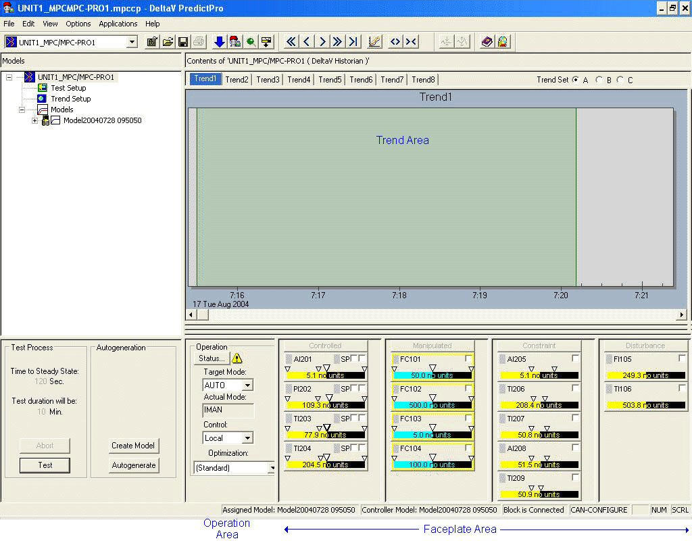
Setting up trends
Three trend sets (A, B, C) consisting of eight trend windows each are provided on the Trend Setup page to plot the function block parameters. Up to six of the inputs and output parameters can be trended at one time in a selected trend. To add or delete a parameter from the trend, select the check box provided with the parameter in the faceplate area. As shown below, the Trend Setup icon in the left pane can be selected to define trends and get a complete view of the Trend Setup page.
For good data values, trends appear in the colors indicated in the parameter data area. The color varies to indicate questionable status (yellow for uncertain or limited values, red for bad values).
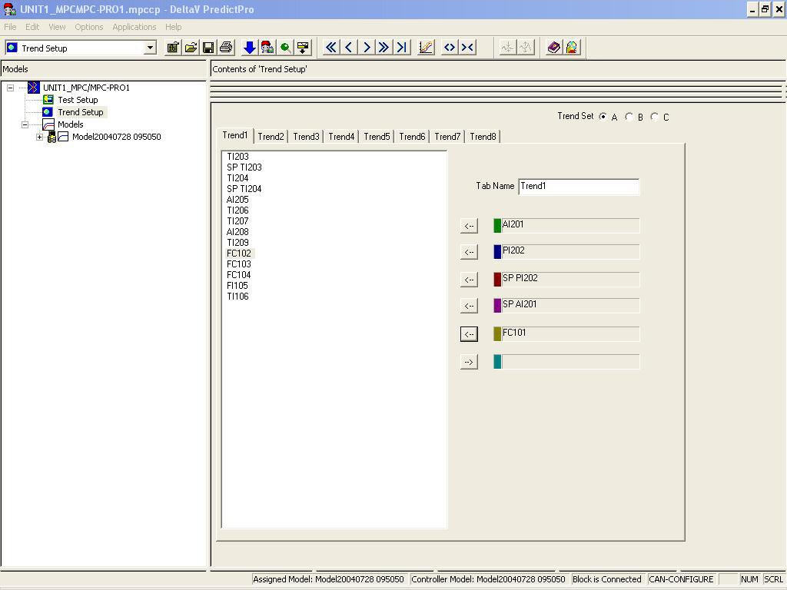
From this view, parameters can be easily added to a trend by selecting a parameter and clicking the transfer arrow. Use the Tab Name field to define a custom name for each trend view. Once trends have been defined, you can return to the PredictPro overview by selecting the top level in the left pane. Use the Toolbar buttons to modify the trend display and the slider bar to adjust the time window that is shown on the trend.
The PredictPro application uses an automated testing feature to determine the process dynamics. Before testing, the downstream blocks that are manipulated by the MPCPro or MPCPlus block must be in the correct mode. Select MPC in the Control portion of the Operation area to force all the downstream blocks to the right mode. After changing the mode, notice that the actual mode of the MPCPro or MPCPlus function block changes from IMAN to MAN if the target mode is MAN.
Setting up the test
Select the Test Setup icon to define the parameters included in a test, the Manipulated parameters that will be tested at one time, and the size of the change made in the Manipulated parameters. The following figure shows the Test Setup view with the Manipulated tab selected.
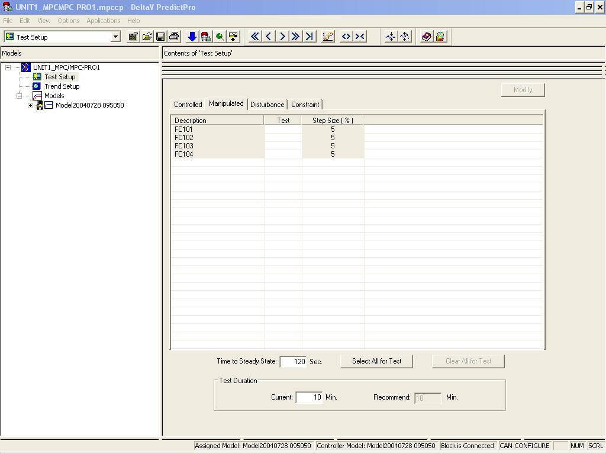
As shown in the following image, additional setup options are automatically shown in the right portion of the setup window when Expert option is selected.
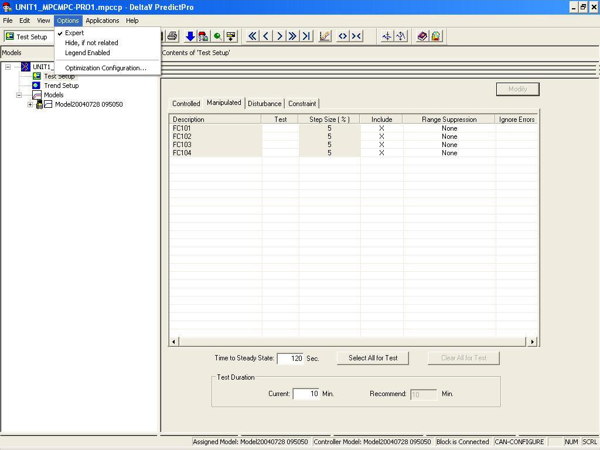
The length of the test is determined by the Time to Steady State (TSS). The Time to Steady State is the estimated time, in seconds, for the process to respond to input changes. Typical estimates are: (3 × First Order Time Constant + Dead Time) or (4 × Dead Time), whichever is greater for the slowest responding input/output pair of the MPCPro block. The default, and minimum value, is 120 seconds. If any process output exhibits integrating response, use the following guidelines to estimate the Time to Steady State:
- For integrating responses with insignificant lag and/or processes where the non-integrating response is significantly slower than integrating, limit the TSS to the approximate time it takes for the integrating process variable to reach one half of its operational limit value(s) when a normal change is applied to the process input.
- The initial estimate of the recommended TSS can be 120 * approximate lag, provided the limiting condition described in the previous guideline is not violated.
- If the identified response is still not satisfactory or the slow dynamics of non-integrating responses necessitate violating the first guideline, estimate the response based on the physical and operational process parameters. The volume of a tank is an example of a physical process parameter and flow rates, low/high tank level limits, and so on are examples of operational process parameters. Then enter the calculated response parameters (Gain per second, dead time, and first order lag, if any) in the corresponding fields of the Step Response Design dialog.
Use the Select All for Test button to select all the Manipulated parameters. Select an individual parameter and select Modify to define the setup of the Manipulated parameter.
Manipulated parameters can be included or excluded from model and controller generation. Manipulated parameters that are selected for test are automatically adjusted in a pseudo-random binary manner when testing is initiated. The change in the Manipulated parameter is determined by the step size in percent of scale. You can change the step size to a value that will cause a process change that is not disruptive to normal process operation.
Normally, testing aborts if the manipulate parameter becomes limited when testing is active.Selecting Ignore Errors causes testing to continue even if limits are hit.
When the process gain is large (big change in process output for a small change in input), you may need to pick a very small step size such as less than 1%. For these types of processes, you can select a range suppression multiplier (10X or 100X) to enable better process identification. Selecting AUTO for range suppression causes PredictPro to automatically scale the manipulated parameter to enable better process identification.
Select the Control and Constraint parameter tabs to define the parameters included in the model identification. By default, all parameters are included. Select the Integrating option to include the parameter as an integrating response.
If the normal process output change is very small compared to its engineering unit range, such as 5 degF with a range of 1000, select a range suppression multiplier (10X, 100X) to get good identification results. Selecting AUTO for range suppression causes PredictPro to automatically scale the manipulated parameter to enable better process identification.
The Test Limit deviation value, measured in percent, and type (None, Deviation, Above, Below) should be set to automatically abort testing if the associated Control or Constraint disturbance deviates (above, below, or either) from its starting value by more than the Test Limit. The following table describes the Test Limit types:
| Test Limit Types | Description |
|---|---|
|
Above |
Above the current value plus the deviation amount |
|
Below |
Below the current value minus the deviation amount |
|
Deviation |
Above the current value plus the deviation amount or below the current value minus the deviation amount. |
For Disturbance parameters, indicate if the parameter is to be included in the model identification. Normally, testing aborts if the Disturbance parameter becomes limited when testing is active. Selecting Ignore Errors causes testing to continue even if limits are hit.
If the normal process output change is very small compared to its engineering unit range, such as 5 degF with a range of 1000, select a range suppression multiplier (10X, 100X) to get good identification results. Selecting AUTO for range suppression causes PredictPro to automatically scale the manipulated parameter to enable better process identification.
The Test Limit deviation value and type (Deviation, Above, Below) should be set to automatically abort testing if the associated Disturbance input deviates (above, below, or either) from its starting value by more than the Test Limit.
Running the test
Once test setup is complete and the downstream blocks associated with the Manipulated parameters included in the test are in their remote mode, select the top level in the left pane, and then select Test to initiate automatic testing of the process. In response, the Manipulated parameters will automatically change in a pseudo-random manner over the test time.
While testing is active, the actual mode of the MPCPro or MPCPlus function block changes to LO. During testing, a Manipulated parameter can be modified by right-clicking it and selecting Set Value. The portion of testing that is complete is indicated by a progression bar. The estimated time remaining to complete the test is shown above the progression bar.
When the test completes, a green area automatically covers portions of the trend associated with the time that testing was active. You can adjust the time covered by the green area either by dragging the start and end divider bars or positioning the bars by right-clicking the chart.
For good data values, trends appear in the colors indicated in the parameter data area. The color varies to indicate questionable status (yellow for uncertain or limited values, red for bad values).
Indicate the area of test data that reflects normal process operating conditions by dragging the green area over the data on the trend window. You can exclude data within the green bar that does not represent normal operation by right-clicking within the green area, selecting Add Excluded Area, and stretching the resulting red bar over the bad data. After you select the test data, click Create Model to create a step response model for the process. For the MPCPro block you can select Autogenerate instead of Create Model, which will create the model and the associated controller. It is recommended that you review the model prior to generating the controller.
An expert user (select ) can select the Create Model option to create the model only from the currently selected I/O parameters. If all the block variables are not included in identification, the result of identification is a partial model since some step responses are unidentified. Block variables are not included if Identify is not selected for Control/Constraint parameters or Include is not selected for Manipulated/Disturbance parameters. The model cannot be created and control cannot be generated from a partial model or if one or more step responses are undefined or questionable. The model contents page shows the status of the current model. Additionally, the following icons show the model status.
When model generation is complete, you can record the conditions that existed for the test in the description area of the interface provided for the model. The default model name can be modified; however, the name cannot include the following characters: \ / : * ? " < > |.
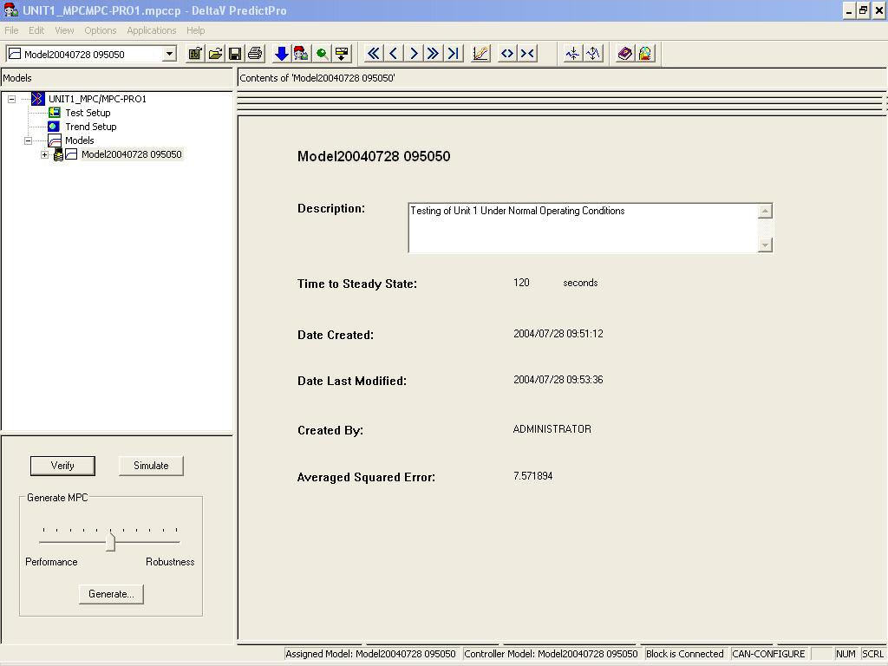
Verifying the model
Opening a model folder and selecting Control and Constraint shows a verification of the model in terms of the calculated process outputs versus the actual process outputs, as shown in the following figure. From this view you can examine the actual process output in direct comparison with the calculated output based on the model either for the time frame defined by the green area of the trend plot or for the original data used in generating the model. You can also examine the XY plot of the actual process output against the calculated output and the corresponding best fit line. In addition, you can use statistics that are provided to indicate how closely the model matches the plant data.
The squared error is shown for all Control and Constraint parameters. In addition, for a selected parameter, the calculated and actual value can be plotted for the original time or for the time frame selected by the green bar in the overview.
Accessing step responses
Select a parameter from the Control & Constraint folder to access the parameter's step response to changes in the Manipulated and Disturbance inputs to a process.
The background color of the individual step response provides further information about the validity of the step response and if it can be used in controller generation.
| Background color | Meaning |
|
The step response has been identified and can be used in controller generation. |
|
| The step response has been identified and selected as the most significant for the associated Manipulated process input. Refer to Parameters in MPCPro block controller generation for more information. | |
| The step response is questionable and must be edited before controller generation. Refer to Modifying step responses for more information. | |
| The step response is unidentified because this parameter was not included in the test setup, the step response has been deleted or cut, or the associated input or output parameter was added to the MPCPro or MPCPlus block after the model was identified. The step response must be completed before controller generation is possible. Refer to Modifying step responses for more information. |
The techniques used to identify the step response assume that valid process gains must fall in a range of 0.1-20. If the gains calculated by both the ARX and FIR technique fall below 0.1, the step response will be displayed as invalid (light blue background) with zero gain (a straight line). Also, if the ARX and FIR do not significantly agree, the application presents the step response as invalid as shown in the following figure.
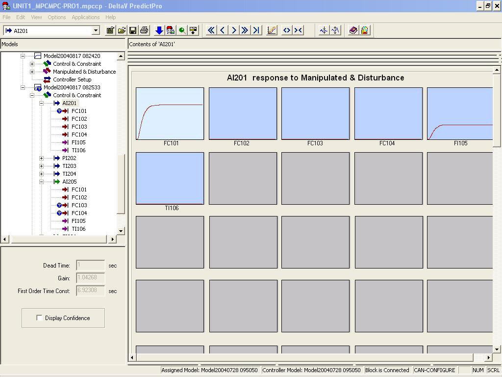
If only one of the identification techniques calculated a gain of less than 0.1, a step response with zero gain will be displayed with a light blue background. The light blue background indicates that the step response is questionable. In these cases, you can set the range suppression multiplier at x10 or x100 for process output. If you expect model gain to be greater than 20, set range suppression at x10 or x100 for the process input. In some cases, the FIR response can be used as a guide in manually editing the step response. As shown in the following figure, often times the FIR response can provide valuable information on the process gain and response and can be used to create the model using Design Response or Plot.
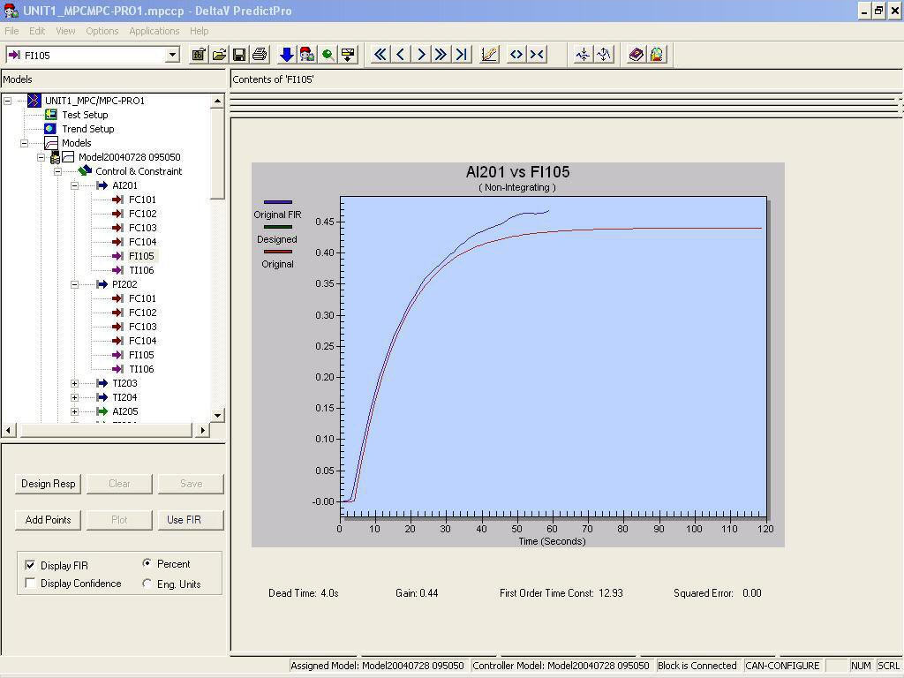
For example, the actual process shown as questionable with zero gain, may be caused by a transmitter with a much wider than normal operating range. In this case, it is recommended that range suppression is selected in Test Setup. Range suppression should also be selected if the Manipulated parameter changes are less than 1%. The PredictPro identifier uses the suppressed range as the measurement engineering unit range and then automatically corrects the model gain for the actual range. The process gain based on the suppressed range should be within the assumed range for the process gain (0.1-20).
Similarly, if one of the identification techniques provides a process gain that exceeds 20, the response will be shown with zero gain and indicated as questionable.
By drilling down into the folder you can access an individual step response to closely examine the step response for any measured Disturbance inputs included in the MPC configuration. The associated step response might be inaccurate if the Disturbance input did not change significantly in the data. If the associated step responses are inaccurate, a warning message is displayed when the model is generated. In some cases, the inaccuracy will be indicated by a step response shown in light blue or as a light blue straight line that indicates no response. Examine the confidence interval calculated for the step response to determine if the step response is accurate. This can be done by selecting the Expert options and then selecting the Display Confidence option in the lower left corner of the screen. In response, the range of 95% confidence is plotted, as shown in the following figure.
As another check on the accuracy of the model, you can compare the ARX model to the FIR response. This can be done by selecting the Expert option, and then selecting the FIR check box. Both responses are displayed as shown in the following figure.
Modifying step responses
Sometimes, the ARX and FIR responses might not agree. In this case, you may need to use other data that includes times when the input changed and then regenerate the model and the controller. If you are familiar with the process dynamics, select the Expert option, and then modify the step response to reflect your knowledge of the process. Similarly, if the plot of the FIR response seems more accurate based on your knowledge of the process, click the Use FIR button.
Make sure to save the step response by clicking the Save button after modifying it. This causes the new step response to be enabled and subsequently used. Some methods for modifying the step response are described in the following paragraphs.
Design the response by adding points to the selected response:
- Select the step response to be modified.
- In the step response area, right-click or click the Add Points button to add the points that define the desired step response.
- Click the Plot button to display the step response.
- Select Save if you want the plotted response to replace the original response.
Modify the step response if you are familiar with the process delay and time constants associated with inputs. Enter the response directly by performing the following steps:
- Click the Design Response button in the lower left corner of the interface.
- Enter the response in the Step Response Design dialog.
- Click Apply to display the new step response.
- Click Save to save the designed step response.
Another way to modify a step response involves copying and pasting individual step responses or all step responses for a Manipulated or Disturbance input between models as shown below.
When copying step responses between models, the Time to Steady State used in the model creation must be the same.
Using the Copy and Paste commands on the context menu, it is possible to combine step responses from different models to create one complete model of the process response. For example, operating conditions may not allow automated testing with all Manipulated parameters selected for the test. Only one or two Manipulated parameters may have been selected for test at any given time. As a result, you may need to generate multiple models, each of which includes valid step responses for the process inputs used in the test. Using the Copy and Paste or Cut and Paste commands on the context menu, it is possible to copy the good step responses from one model to another model. In this way, a good step response can be copied to replace one not identified or not included in the test. As a result, a complete model can be created and then used to generate the control.
If a step response model is known to be invalid, you can use the Delete command on the context menu to remove the step response from the model. After using the Delete or Cut command on the context menu, the step response's background changes to gray as shown in the following figure.
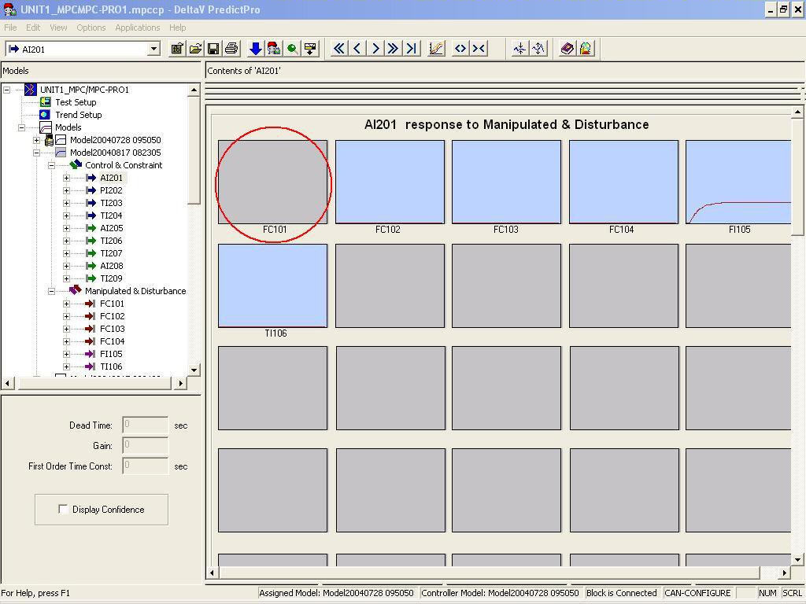
Any Questionable or Unidentified responses must be manually edited or a good step response pasted to obtain a complete model. All step response models must be good (dark blue background) before a controller can be generated using the model.
Make sure that you clean up any residual step responses with gains that are smaller than 0.1.
For the MPCPro block, once you are satisfied that the model accurately reflects the process dynamics, select Generate to update the MPCPro configuration for the new model and to generate the controller using the step response modifications. When the controller is generated from a selected model, the Control parameters used for generation are displayed as shown in the following figure.
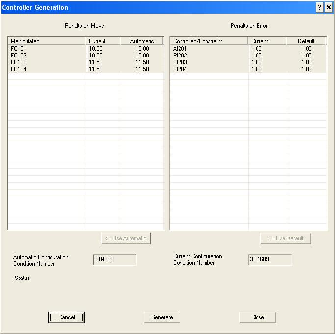
It is recommended in most cases that you leave the controller generation parameters at their default values and select Generate in the Controller Generation dialog to generate the control. If you have expert MPC knowledge, you can change the default values to address special requirements. For example, you can increase the Penalty on Move to make the control less aggressive or more robust. Options to extend the control horizon and to block control moves and include MV targets for better constraint management are available for advanced users. Refer to PredictPro options for advanced users for information.
You must download the associated module to use the new control definition after generating control. You can verify and refine the MPCPro configuration and control generation with the off-line PredictPro simulation application, MPC SimulatePro. However, the controller generation parameters cannot be changed online because any changes in these parameters require that the controller be re-generated and the module re-downloaded.
For the MPCPlus block select
Controller Setup in the hierarchy pane which is
visible when the Expert option is selected in the
Options menu. The offline penalty values used
for tuning appear in the contents pane as shown in the following figure.
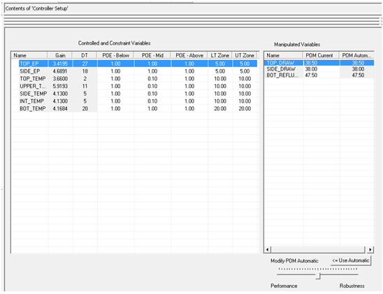
When you are satisfied with the initial tuning values, save and download the associated module. You can use MPC SimulatePro to verify and refine the MPCPlus configuration, including modifying the tuning values without the need to download for the changes to take effect. Refer to the MPCPlus function block documentation for more information on tuning parameters.
Controller loading
For MPCPro block modules, the loading on the controller depends heavily on the block execution period (the configured Time to Steady State divided by 120). Depending upon how sparse the model is, a block configured for 20x20 needs about 200-500 ms of computation time for an SQ, MQ, and SDPlus controllers and 100 – 250 ms of computation time for SX and MX controllers. The loading for computation time is automatically leveled over multiple module executions. This can be seen in controller diagnostic parameters such as LPctOnTime, FreTim (MD Plus and SD Plus controllers) and Perf_Index (for SQ, SX, MX, and MQ controllers). If you notice severe slippage in modules other than the module that contains the MPCPro block, consider giving these modules a higher priority or assigning them to another node. If a configuration is larger than 20x20, it is recommended that the MPCPro block be configured singly in its own module with a scan rate of five seconds or slower. This places the computation in the low priority task and prevents slippage of medium and high priority tasks. Larger processes usually have longer time constants and dead times than smaller processes. A time to steady state of 7200 (60s block execution) or slower is realistic for processes with 20 or more inputs and 20 or more outputs.
PredictPro allows the configuration of 20x20 processes with Time to Steady States as small as 120s (1 s block execution). When the time it takes to run the MPCPro block approaches the block execution period, controller overloading occurs and you are prevented from generating and downloading an MPCPro block. This situation is unlikely with larger processes since they are usually slower. To avoid controller overloading, increase the Time to Steady State and/or reduce the number of inputs and/or outputs. The red area in the chart and table below indicates the range in which PredictPro prevents MPCPro controller generation and downloading. The yellow area indicates the range in which PredictPro displays an MPCPro controller loading warning but allows MPCPro controller generation and downloading to proceed. The green area shows the recommended configuration. As an example, refer to the table: an MPCPro controller for a process with 20 inputs and 30 outputs (600) must have a Time to Steady State of at least 257.
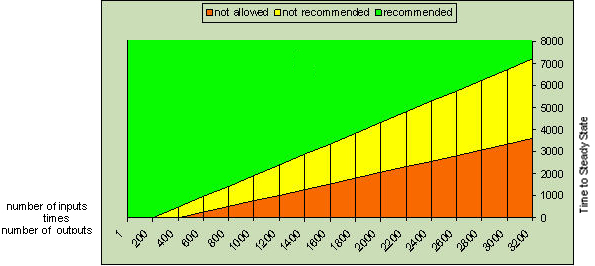
|
# inputs * # outputs |
Not recommended range (PredictPro displays a warning message) |
Not allowed range (PredictPro prevents controller generation) |
|---|---|---|
|
400 |
< 480 |
[any Tss allowed] |
|
600 |
257 to 960 |
< 257 |
|
800 |
514 to 1440 |
< 514 |
|
1000 |
771 to 1920 |
< 771 |
|
1200 |
1029 to 2400 |
< 1029 |
|
1400 |
1286 to 2880 |
< 1286 |
|
1600 |
1543 to 3360 |
< 1543 |
|
1800 |
1800 to 6840 |
< 1800 |
|
2000 |
2057 to 4320 |
< 2057 |
|
2200 |
2314 to 4800 |
< 2314 |
|
2400 |
2571 to 5280 |
< 2571 |
|
2600 |
2829 to 5760 |
< 2829 |
|
2800 |
3086 to 6240 |
< 3086 |
|
3000 |
3343 to 6720 |
< 3343 |
|
3200 |
3600 to 7200 |
< 3600 |
In general, we recommend having at least 30-50% freetime in a controller before adding a large MPCPro block to leave ample CPU for communication tasks that might be required for all the display updates.
The memory used by an MPCPro block is automatically adjusted based on the configured number of inputs and outputs. It ranges from about 0.3 to 5 MB. If the available memory in the controller is insufficient, a block remains in OutOfService mode and flags a configuration error after download.
The MPCPlus block takes longer to execute than the MPCPro block because it generates the control matrix online at each execution cycle and can require multiple iterations to determine the move plan. For this reason the MPCPlus block must execute in a module assigned and downloaded to a workstation. A module with an MPCPlus block cannot be downloaded to a controller.
After commissioning the application check that the module Exec_Time parameter value (microseconds) is shorter than the module scan rate (seconds). If Exec_Time is longer and you are using default blocking, try using extended moves blocking to reduce the Exec_Time to an acceptable level. Refer to PredictPro options for advanced users for information on blocking in the MPCPlus function block.
Setting sampling and execution rate parameters
Model identification and validation depend on the availability of data at precise sampling points. Therefore, the test data (or data from an external file) must have accurate parameter settings which determine the data sampling. The following three parameters, accessible through the Control Studio and PredictPro applications, are used to determine the data sampling:
- Data Sampling Rate (DSR) - the block history sample rate configured in the MPCPro Properties and MPCPlusdialogs (accessible from the Control Studio and DeltaV Explorer applications). If you are using file data, this is the file data rate.
- Module Execution Rate (MExec) - the Module scan rate configured in the Control Studio application.
- Time to Steady State (TSS) - the process Time to Steady State configured in the PredictPro application.
Since PredictPro uses a horizon of 120 (120 sample points along the process TSS so that the block executes at the rate TSS/120 in seconds), the fundamental requirements, in mathematical form, for accurate data sampling are:
Equation 1: TSS = 120 x DSR x n
Equation 2: TSS = 120 x MExec x m
where m and n are integers.
Ideally, DSR = MExec x p (p is an integer) also should be satisfied.
Recommendations
Module Execution Rate (MExec) for the MPCPro block: The default value is 1 second; however, for large MPC configurations, or those with a TSS of 1 hour (3600 sec) or more, consider configuring MExec at 5 seconds. For blocks with a configuration where (Number of Outs × Number of Ins > 400), MExec of 10 seconds or slower is more appropriate. For blocks with a configuration where (Number of Outs × Number of Ins > 200), MExec of 5 seconds or slower is more appropriate.
Module Execution Rate (MExec) for the MPCPlus block: Refer to the table in Controller loading.
Data Sampling Rate (DSR): The default value is 1 second; however like MExec, for larger MPC configurations or those with a TSS of 1 hour (3600 sec) or more, consider configuring DSR at 5 seconds or slower. When configuring DSR, it is advisable that the value of n in Equation 1 range between 3 and 10. This permits the creation of models at different TSS that are close to your expected TSS. At the same time, it does not overload the Continuous Historian.
Time to Steady State (TSS): The Time to Steady State is the estimated time, in seconds, for the process to respond to input changes. Typical estimates are: (3 x First Order Time Constant + Dead Time) or (4 × Dead Time), whichever is greater for the slowest responding input/output pair of the MPCPro block. The default, and minimum value, is 120 seconds. When accurate TSS values are not known, it is advisable to use the higher of the two estimates. For integrating processes, refer to the guidelines in Setting up the test.
Applicability in PredictPro
The DeltaV PredictPro application checks for relationships between the time parameters for test, model creation, and verification operations. It uses the entered process TSS as the basis for making any recommendations and/or changes.
Test: Since the test generates the data to be used in all subsequent operations, both Equations 1 and 2 (shown in Setting sampling and execution rate parameters) must be satisfied. If not, PredictPro suggests an adjusted TSS that does not require a change to DSR or MExec. If the adjusted TSS is significantly different than the configured TSS, PredictPro recommends some values. Note that a threshold of an approximate 25% change in value applies in either displaying the adjusted values or automatically using the adjusted values.
Model creation: Since data is already available at this stage, PredictPro checks that only Equation 1 (shown in Setting sampling and execution rate parameters) is satisfied. In the case of a mismatch, PredictPro suggests a new TSS value. Naturally, if the suggested values are not accurate, the TSS and/or the sampling rate may be changed. If you are changing the sampling rate, generate a new data set at the new sampling rate before creating the model.
Verification against selected data: PredictPro checks that only Equation 1 (shown in Setting sampling and execution rate parameters) is satisfied. If not, the application proceeds no further since the models execution rate must be an integer multiple of the sampling rate of the data set for verification.
Changing the parameter values
To change the Continuous Historian sampling rate (DSR):
- In Control Studio, double-click the MPCPro or MPCPlus block to open the block's Properties dialog.
- Click the History sample rate drop-down list, and then change the parameter value.
- Save and re-download the module.
- Re-download the Continuous Historian node to which this module is assigned.
- Reconnect the PredictPro application to this block by shutting down and restarting PredictPro or by selecing .
To change the module execution rate (MExec):
- Open the module with the MPCPro or MPCPlus block in Control Studio.
- Right-click the Diagram view, and then click Properties to open the Module Properties dialog, and then select the Execution tab.
- Click the Scan rate drop-down list, and then change the parameter value.
- Save and re-download the module.
- Re-download the Continuous Historian node to which this module is assigned.
- Re-connect the PredictPro application to this block by shutting down and restarting PredictPro.
To change the TSS:
Defining control and optimization objectives
Optimization objectives are defined for:
Constraint handling is defined by assigning priorities to the process outputs such as the Control and Constraint variables. The Optimizer operates such that if a Constraint or Control parameter is projected to exceed its constraint limits or control range, the working setpoints of the other control parameters and MV targets are adjusted to bring the process output within limits.
If processing conditions do not allow all Control and Constraint parameters to be maintained within control ranges and constraint limits, the lower priority Control or Constraint parameters are allowed to go outside the control range or constraint limits. Refer to the MPCPro or MPCPlus function block topics for information on setting the priority. The function blocks allows five priorities for the process outputs:
The default priorities set during MPCPro configuration may not apply to a specific application. Users should always review the priorities for Control and Constraint variables. There are two way to review priorities: during configuration and from the MPC Operate Pro application.
- During configuration: Select and right-click the function block, select Properties, click the Advanced button, and read the value in the Priority column.
- From the MPC Operate Pro application: In the PredictPro application, click to launch the application, and then click for the MPCPro block or for the MPCPlus block.
Control objectives define multivariable control configuration functionality at normal operating conditions, that is when all process outputs are within control ranges and constraint limits and economic objectives are satisfied. The control functionality is defined for Control, Constraint and Manipulated variables. In the PredictPro application, select to open the Configure Multiple Objective Functions dialog.
Control parameters in MPCPro included in an objective function have determined behavior around setpoints. As a rule, Control parameters defined in the objective function are driven towards their setpoint values. A Controlled parameter can deviate below and/or above the setpoint, depending upon its definition of maximize, minimize, or target.
A Control parameter defined as:
- Maximize moves below the setpoint within the control range if necessary to achieve constraint handling or economic objectives. When other objectives are achieved, it then moves upward to the setpoint high limit (maximizing the Control parameter).
- Minimize moves above the setpoint within the control range if necessary to achieve constraint handling or economic objectives. When other objectives are achieved, it then moves downward to the setpoint low limit (minimizing the Control parameter).
- Target moves above or below the setpoint within the control range if necessary to achieve constraint handling or economic objectives. When other objectives are achieved, it then moves toward the setpoint. Achieving a Target objective has a higher preference than achieving a Maximize or Minimize objective when all objectives cannot be achieved.
- PSV (MPCPlus only) moves above or below the setpoint within the control range if necessary to achieve constraint handling or economic objectives. When other objectives are achieved, it then moves toward the setpoint. Achieving a PSV objective has a lower preference than achieving a Target, Maximize, or Minimize objective when all objectives cannot be achieved.
Control parameters not included in the objective function are defined automatically as None and will be kept above or below the setpoint with no attraction toward the setpoint.
For an MPCPro block, the Control Range is the setpoint plus and minus the SP_DELTA_RANGE parameter value for Target. For an MPCPlus block, the Control Range is set to zero (0) for Target. For both the MPCPro and MPCPlus blocks, None, Minimize, and Maximize, the Control Range is the full CV range (low CV SP limit to high CV SP limit) and the setpoint is not considered. For PSV (the MPCPlus block only), the Control Range is the full CV range, but the setpoint is the same as with Target.
Constraint parameters included in the objective function are driven towards their high or low limit based on the maximize or minimize definition. When the Constraint parameter is not included in the objective function, the optimizer is free to make changes that cause the constraint to move within its upper and lower limits as shown in the following figure.
Manipulated parameters included in the objective function are driven towards their high or low output limits based on their maximized or minimized settings or their associated CV's maximized or minimized settings. If a Manipulated parameter is not included in the objective function, the optimizer attempts to maintain the current value if no other conditions require the Manipulated parameter to be moved. Selecting PSV (Preferred Settling Value) causes the optimizer to maintain the Manipulated parameter at the configured preferred settling value if no other conditions require a changed MV position.
When the MV objective is defined as:
- None and all other objectives are satisfied, the MV is kept at the current (last) position.
- Preferred Settling Value (PSV), it will be satisfied only when all other objectives are satisfied.
If two or more MVs are configured for equalize, the optimizer attempts to maintain the associated MVs at the same value after achieving the other objectives as shown in the following figure.
Note that the default objective function, Standard, does not need to be defined and is automatically created for the block configuration. The standard control objective is to maintain Control parameters at setpoints. If the configuration contains only Constraint variables, the last MV values are maintained thus preserving the stability of the configuration. By default, Control variables have normal priorities assigned and Constraint variables have higher than normal priorities assigned.
The Standard control objective can be modified but not renamed. However, the other objective functions can be modified and renamed. An objective function is modified by selecting a parameter that is included in the objective, and then selecting Modify to define the optimization type (Maximize, Minimize, Target, PSV, or Equalize). You can also define the limits for constraints included in the objective function. The objective functions for which the Operator Selectable box is checked are automatically included in the objective list that is displayed in the MPC Operate Pro interface.
Economic objectives add economic meaning to the defined control objectives by setting value per% to some or all Control, Constraint and/or Manipulated parameters included in the objective function. Any value entered in the value per % column outweighs all other related control only objectives with no economic meaning (value per % = 0). The acceptable range for "value per %" is [0.0-1000.0]. If you need to apply "value(s) per %" that are out of the accepted range, you must rescale all "values per %"by multiplying them by an arbitrary scaling coefficient. "Value per %" can be rescaled in a meaningful way; for example, "$ per % per one hour operation" to "$1000.00 per % per one hour operation" by multiplying the original values by 10-3 or to "$ per % per one day" by multiplying the original values by 24. The Economic objective is satisfied prior to Control objectives unless limits are exceeded and then Constraint objectives take the highest priority.
Except for economic objectives for MVs defined in the value per% column in the Optimizer dialog in the MPC Operate Pro application, the Objective Function per% column for each MV displays the effective value per percent. This column includes the value defined for the MV itself in the value per% column and values projected from the other Control and Constraint variables associated with this MV. These projected values may outweigh the original MV objective and the optimizer would drive that MV in a direction opposite to that which was intended. Users should be aware of this possibility and always verify the Objective Function per% column to get an initial evaluation of the optimizer's functionality.
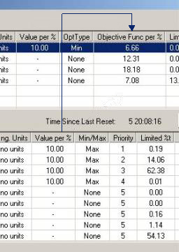
To meet special requirements where the control objective can change based on feedstock cost, or product value, you can define different objective functions for the same configuration and select desired functions during operation.
Parameters in MPCPro block controller generation
The Constraint and Control parameters included in the controller generation are automatically selected to give the best possible dynamic response. The total number of Control and Constraint parameters included in the controller generation must be equal to or less than the number of independent parameters (the total number of Manipulated parameters). The selection of the Control and Constraint parameters to include in the control generation is automatically made to provide the minimum condition number associated with the control generation. In addition, the delay and gain of the process output step responses for a change in the Manipulated process input is also considered. Select the Controller Setup icon in the left pane to examine the parameters that have been selected for the control generation.
In this interface, the dynamics of the process outputs for a selected Manipulated parameter are displayed. Also, the condition number for the current selection of Constraint and Control parameters is shown. By removing a selection for a Manipulated parameter, it is possible to select another Control or Constraint parameter to be used in the control generation. When the new process output is added, the resulting condition number is automatically displayed.
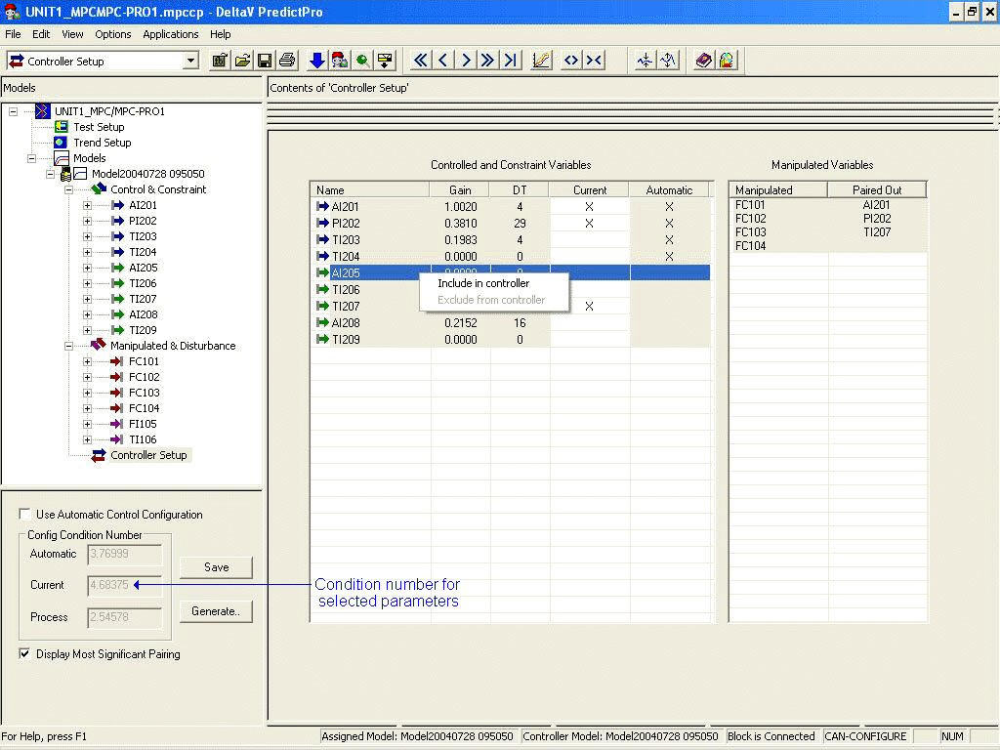
Best control is normally achieved if the process outputs are selected to give the minimum condition number. It is possible to have more independent or Manipulated parameters than Control and Constraint parameters. The possible range of condition numbers is:
- Less than 1000 - normal control generation is possible
- Greater than 1000 but less than 10,000 - control generation with warning is possible
- Greater than 10,000 - control generation is not possible
MPC SimulatePro
After downloading the module, you can use the MPC SimulatePro application to test the control off-line without impacting the process operation. An off-line simulation of the process is provided based on the process model that was identified using DeltaV PredictPro. In this simulation environment, you can simulate control as well as the process response to changes made by the PredictPro control. Using MPC SimulatePro's special interface, you can interact with the control just as you would during an actual process. You can add noise and unmeasured load disturbances to the process inputs. MPC SimulatePro also allows you to evaluate the control performance for different plant operating conditions. In addition, you can perform an expedient test on the control without disturbing actual plant operations. In this way, MPC SimulatePro can also serve as an operator training tool.
The prerequisites for running MPC SimulatePro are:
- DeltaV PredictPro is open for the module.
- You have identified or manually entered a process model using PredictPro and generated the controller for the MPCPro block.
- The module has been downloaded.
To access MPC SimulatePro, you must first select to identify yourself as an expert user. Then, either select the process model that you want to use for the process simulation from the models that have been generated and click the Simulate button located at the bottom left corner of the screen or select the process model in the hierarchy, right-click, and select Simulate to test the control off-line. Refer to the following figures.
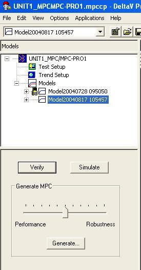
Once Simulate is selected, the interface used to access the simulation is automatically created as shown in the following image.
MPC SimulatePro functions similarly to MPC Operate Pro. However, MPC SimulatePro also allows you to perform the following functions to support simulation:
- Execute the process and control simulation faster than real time. This allows you to evaluate the performance of a process that is slow in response.
- Introduce disturbances that will be added to the process output or disturbance input used in the simulation. You can evaluate the impact of noise and unmeasured load disturbances on the process control and change the value of measured load disturbances inputs.
- Disable inputs to test control performance when the status of a Control, Constraint, or Disturbance input is Bad.
- Switch the mode of the downstream blocks to Local so that the control performance can be examined for this situation.
All values and ranges are based on the function block's configuration. MPC SimulatePro shows the names of both the configured model and the simulation model. The trend area continually updates (that is, it defaults to Continuous mode upon launching). The future area comprises one third of the graph, and is yellow to distinguish it from MPC Operate Pro, which is green. Initially, the time scale on the chart is based on the time when MPC SimulatePro was launched. As you change the real-time execution multiplier, the time change reflects that multiplier. You can change the setpoint and Manipulated variable. Also, the effects on predicted Control and Constraint variables are shown in the trend and the faceplates. You can select and change the real-time execution multiplier to be used in the Continuous mode or you can select the Step mode by clicking the Advance button. Refer to the following figure for information on these controls.
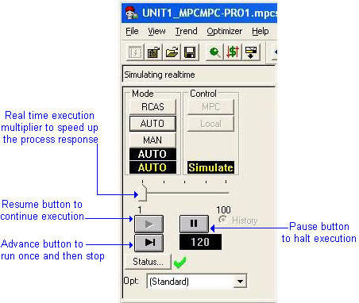
When using the real-time execution multiplier, click the Pause button to temporarily freeze the display of the multiplier change. Click the Resume button to continue updates. When using Step mode, the trend is a snapshot and the function block execution is only performed on request. Click the Advance button to access Step mode. You can change from Step mode to Continuous mode by clicking the Resume button.
To force a disturbance on a process output or Disturbance input, select the parameter to which the disturbance is to be added. The faceplate for this parameter is displayed in the left pane of the MPC SimulatePro interface. Use the selections provided in the bottom half of this faceplate to specify the disturbance to be introduced, as shown in the following figure.
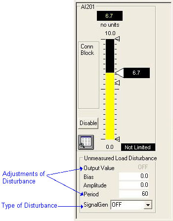
When you are finished using MPC SimulatePro, you can save the file you created for future reference. Saving the file saves not only the trend selection and the Y-scale, it also saves all user-adjusted values for signal amplitude, bias, and the period for the next simulation run on the same module. For this module, you can select a new model to be used in simulation. When you do so, if you previously saved this setup information, it can be used with the new model. In addition, the previously used setup data becomes the default.
Defining an MPCPro operator interface
You can create an operator interface for the MPCPro function block using the MPCPro Input (MV/DV) and the MPCPro Output (CV/AV) dynamos from the frsAdvCFncblk dynamo set in DeltaV Operate in configure mode. For the MPCPlus block use the MPCPlus Input (MV/DV) and the MPCPlus Output (CV/AV) dynamos.
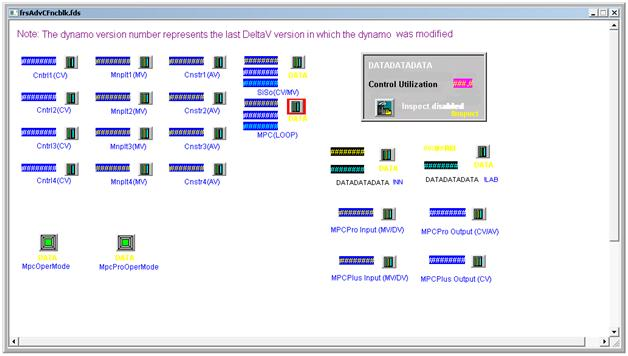
Place the dynamo adjacent to the associated I/O or control block on the process graphic. When you place a dynamo on a graphic, the Dynamo Properties dialog opens.
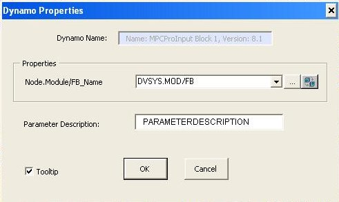
For the Input and Output dynamos to work properly, both the module/function block name and the parameter description are required fields. The Parameter Description is the description that was configured for the input or output variable in Control Studio. The following example shows how this entry appears for module UNIT1_MPC and a Manipulated parameter with a user description FC101.
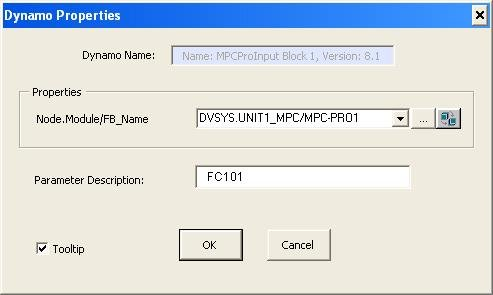
The dynamos provide access to the module's faceplate and the faceplate provides access to the module's Detail display. Both the faceplate and the Detail display provide additional information on the target or limit values as shown in the following figures.
As shown in this faceplate, the manipulated variable value 50.0 represents the preferred settling value if OptType=PSV. If OptType=Equalize, this value represents the equalized value.
Place the MPCPro_Oper dynamo on the primary graphic display of the process that is controlled by MPCPro. When you access this dynamo or the one on the faceplate, a predefined view of MPCPro control is provided that you can use to make setpoint and mode changes associated with the MPCPro function block. The following examples are for the MPCPro block but the MPCPro_Oper dynamo is also suitable for the MPCPlus block.
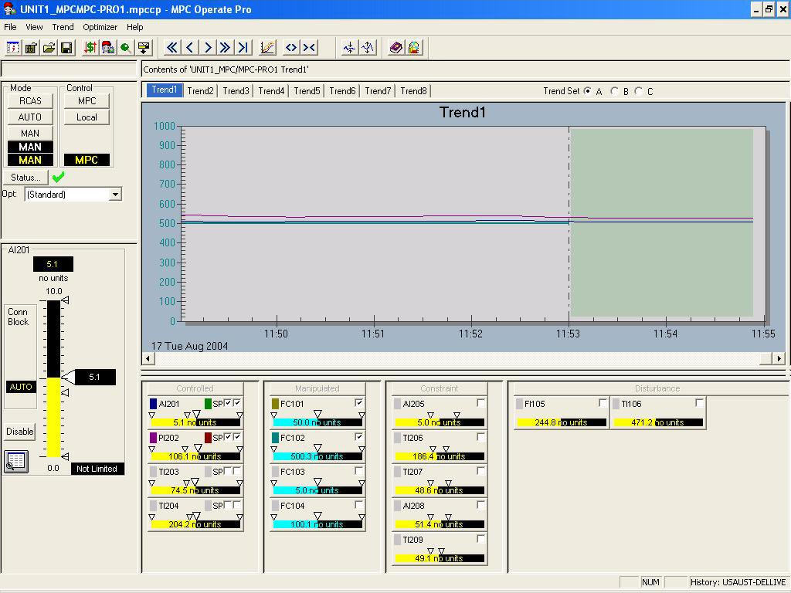
Through the view selection, you can select options to customize the information presented in the MPC Operate Pro interface. For large MPCPro applications that involve many process inputs and outputs, the Smallest Faceplate size option allows more process inputs and outputs to be viewed directly, as shown in the following image.
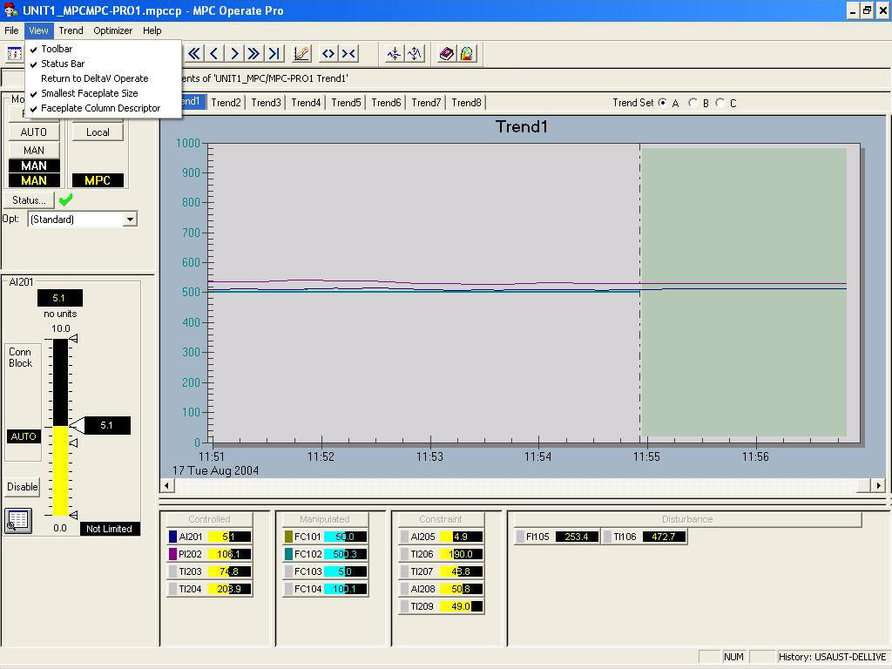
From the MPC Operate Pro toolbar, you can select a dialog that shows the cost and profit associated with the selected objective as shown in following image.
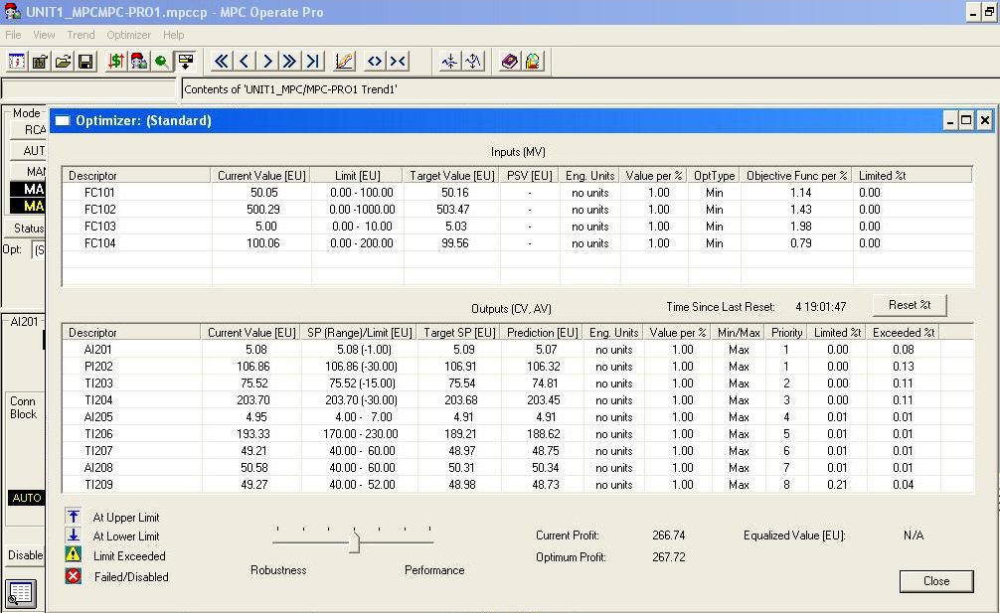
PredictPro options for advanced users
The default settings for controller generation should work in most situations; however, using advanced options to extend the control horizon and to block control moves might improve control performance in certain situations.
Adding CV and MV optimal targets to the MPC controller
The MPC controller, working with the LP optimizer, has two main objectives as shown in the following figure:
- Dynamic control objectives - minimize the CV control error with minimal MV moves within the operational constraints.
- Steady state optimization objectives - achieve optimal steady state MV target values set by the optimizer and target CV values calculated from the MV target values.
The MPC controller with default settings directly applies only optimal CV targets and then works to achieve both the dynamic control and steady state optimization objectives. Refer to Changing the advanced options for the MPCPro block for information on how to include MV targets into controller generation and operation.
Steady state MV targets are eventually achieved in an indirect way by achieving the CV targets. Some applications may require tighter control on MVs. This can be achieved by setting optimal MV target weights for the MPC controller. By developing a combined solution, the MPC controller provides output that accounts for both the CV and MV targets. Refer to Changing the advanced options for the MPCPro block for information on MV target weights.
Extending the control horizon
The potential benefit from extending the control horizon would occur in processes with significantly different deadtimes and response times. For the MPCPro block, the default value for control horizon is 16 and the allowed range is from 1 to 32. For MPCPlus, the default value is 14 and the allowed range is up to 40. Refer to Changing the advanced options for the MPCPro block for information on how to extend the control horizon.
Blocking control moves
Blocking control moves might improve the condition of the control matrix and in some cases, improve control performance when there are responses with significantly different deadtimes and responses. The following image shows how several moves up front will ensure that short term errors are addressed by the controller. Refer to Changing the advanced options for the MPCPro block for information on how to block control moves.
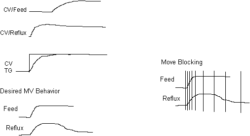
Using the advanced options
MV target weights
For the MPCPro block the MV target weights are in the controller header file, ControllerHeader.predictPro, in DVData\PredictPro. There is a floating point value for each MV. The default values in the file are 1.0, but the default state is False, so the actual default value weights are 0.0. The recommended range is 0 to 2.0. Close to zero values provide the minimum enforcement of the steady state MV optimal target values by the controller; 1.0 is moderate, 2.0 is strong. Follow the instructions in Changing the advanced options for the MPCPro block to change the weight values.
For the MPCPlus block the MV target weight is in the parameter OPT_MV_WT. A single floating point value applies to all MVs. The default value is 1.0. The recommended range is 0.0 to 1.0. Values close to zero provide minimum enforcement, 0.1 is moderate, 1.0 is strong.
Extending the control horizon and moves blocking
For the MPCPro block the values are in the controller header file, ControllerHeader.predictPro, in DVData\PredictPro. The default control horizon is 16, but can be changed up to 32. The default moves blocking is no blocking, which has the value "1111111111111111". To adjust the control horizon and moves blocking follow the instructions in Changing the advanced options for the MPCPro block . This section includes and explanation of the ones (1) and zeros (0) in the blocking mask.
For the MPCPlus block both the control horizon and the moves blocking values are held in the MV_BLOCKING parameter. MV_BLOCKING contains 16 integer elements with a default value of "1,2,3,4,5,7,9,14,0,0,0,0,0,0,0,0". The integer values should increase sequentially up to the maximum value that represents the control horizon value. In the default MV_BLOCKING value, moves 6, 8, and 10-13 are blocked and the control horizon is 14 (but can be as high as 40). Use zeros in the unused elements. Note that the equivalent blocking value in the MPCPro block is "11111010100001".
Changing the advanced options for the MPCPro block
In order to use these options the controller must be generated at least once for the selected block and model pair.
- Close the PredictPro application.
- Navigate to DVData\PredictPro\module name\block name\Modeldata&ID.
- Right-click the ControllerHeader.predictPro file, and then select Properties from the context menu.
- Uncheck the Read-Only check box, and then click OK.
- Open the file with Notepad.
Use the example file (ControllerHeader.predictPro) that follows this list for guidance in performing the next steps.
- To enable and disable MV targets in the MPC controller, enter True (enabled) or False (disabled) in the Penalty on MV Error Enabled section of the file.
- To adjust the MV targets' controller weights coefficients, edit the Penalty on MV Error section of the file. Each consecutive parameter corresponds to a consecutive MV. The default weights are 0.0. It is recommended that the weights not exceed 2.0.
- In the Control Horizon section, edit the number.
- In the Moves Blocking section, edit the mask of moves blocking. The mask consists of ones (1) and zeros (0). The number of digits is determined by the control horizon. The settings for the control moves start on the left and end on the right.
- To block moves, enter 1 with consecutive zeroes to indicate the start and end of the moves blocking. In this example, moves 6 to 9 and 11 to 16 are blocked: 1111100001000000.
- To enable and disable moves blocking enter True (enabled) or False (disabled) in the Moves Blocking Enabled section of the file.
- Save and close ControllerHeader.predictPro.
- Open PredictPro, and then generate and download the controller.
- Repeat this procedure for each new model created. A ControllerHeader.predictPro file must be available for each model.
- Validate the controller stability and performance after setting new parameters for controller generation.
Adjusting MV target online weights
For the MPCPro block online weights for MV targets can be adjusted by changing the MV_TGT_FACT[1..40] values (one multiplier for each MV). It is possible to disable the controller action towards the MV targets by applying a factor of 0.0 to the corresponding MV. Default weights are set to 1.0, although they are not used if the controller was generated with MV targets disabled. It is recommended that the weights do not exceed 10.0.
For the MPCPlus block, make online changes to the MV target weight by changing the parameter OPT_MV_WT.
The following segment from a ControllerHeader.predictPro file shows the control horizon and moves blocking sections.
ControllerHeader.predictPro . . . Penalty on MV Error 1.000000 1.000000 1.000000 1.000000 /Range 0.0 - 10.0 Control Horizon 16 /Up to 32 Moves Blocking 1111100001000000 /0=move blocked Moves Blocking Enabled True /Move blocking applied only if True Penalty on MV Error Enabled True /MV targets applied to the controller only if True